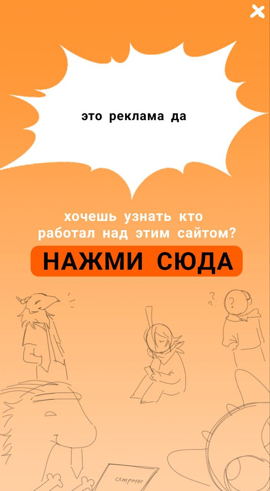
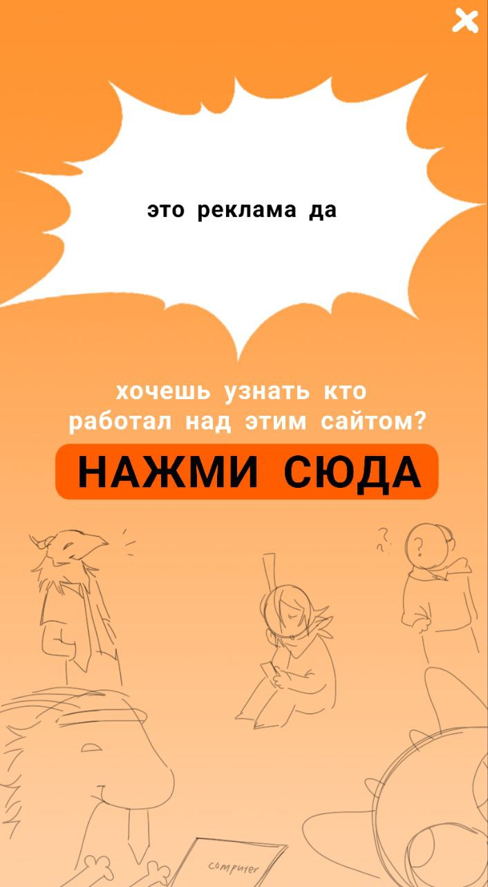
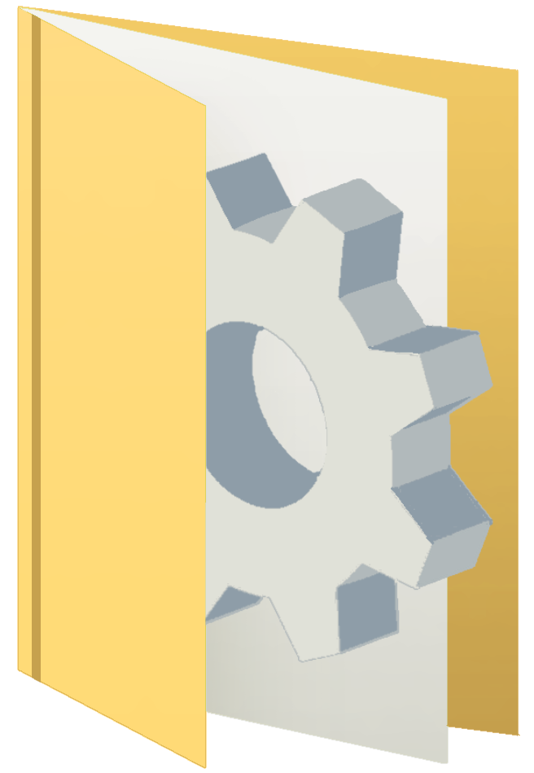

.gif)
.gif)
.gif)
| :/ главная страница |
| разделы |
|

Копии |
|
Лобби |
|
Нигде |
вам здесь не рады!
это закрытый сайт, созданный исключительно в целях хранения информации для сотрудников неофициальной локальной компании «космос». здесь ведется документация нынешних событий и лишних копий файлов в системе. бывают разные ситуации, захочешь не думая о последствиях открыть дверь, как внезапно оказываешься в другой реальности. “меж пространственный интернет” выдает иногда случайно что то похожее, по этому вы могли наткнуться на эту страницу. мы все понимаем.
если вы все таки хотите ознакомиться с нашей компанией…
КОСМОС — Контроль и Оптимизация Систем Мировых Объектов и Существ. наша работа - очистка вселенной от мусора что нагружает ее и так комплексную и сложную работу. услуги определенным лицам мы не оказываем. конфиденциальную информацию и личности сотрудников не раскрываем, предпочитаем оставаться анонимными в пределах нашей вселенной. можем лишь попытаться открыть вам глаза на правду, что вышестоящие чины - врут. никакой бог не следит за порядком во вселенной, этим занимаемся мы.
с чем мы работаем?
если в общем, то с системными ошибками, а если более углубленно, то с копиями. копии - это существа созданные по системной ошибке(тут ссылка на страницу оригинала из общего доступа)